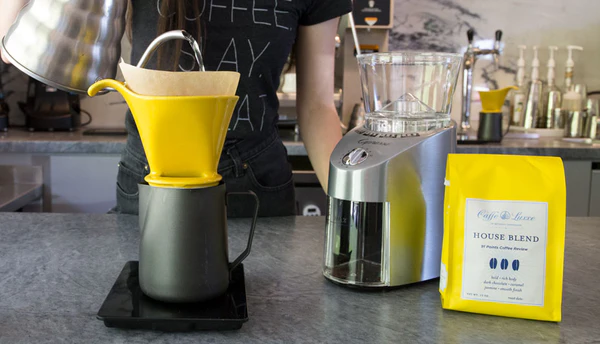

The amount of coffee you use in relation to the amount of water you brew with is what determines how strong or weak a cup of coffee will be. The more coffee you use, the stronger the cup; the less coffee you use, the weaker the cup. So how do you know how much coffee to use? The best way to think about it is as a ratio between the amount of coffee used to the amount of water used. For our House Blend, we use a ratio of about 1:12 (35 grams of coffee to 400 grams of water) to help accentuate its chocolate sweetness and silky body. For our Single Origins, we recommend using a ratio of 1:14, which helps to highlight the more delicate flavors and acidity.
